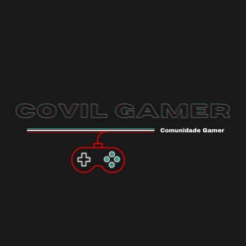

Projeto
Resumo:
O site que será apresentado é uma rede social direcionada para gamers,será um site para buscar
grupos para jogar,para trocas de itens em jogos e também achar pessoas para lhe ensinar sobre
os jogos como coaches.Terá um sistema de perfil onde você colocará seus interesses, jogos e os
itens no seu inventário que estão para troca.
A comunidade brasileira dos games tem um local para se encontrar e socializar?
Objetivo específico
O tema escolhido foi a rede social para gamers por dois grandes motivos, a falta de sites com
tal propósito focado ao nosso país, no brasil a rede social gamer é muito pouca explorada por
isso vimos uma grande oportunidade na área, outro motivo é a grande quantidade de pessoas no
brasil que se interessam pelo assunto, o brasil é o 13º maior mercado de games do mundo sendo
ele o maior da américa latina.
Nosso logo:
